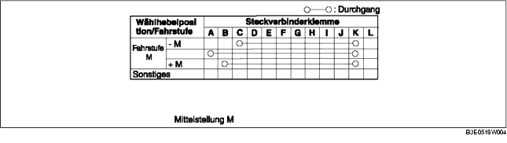

1. Die Batterieabdeckung ausbauen. (Siehe BATTERIE AUSBAUEN/EINBAUEN [ZJ, Z6].) (Siehe BATTERIE AUSBAUEN/EINBAUEN [LF].)
2. Das Massekabel der Batterie abklemmen.
3. Die Konsole ausbauen. (Siehe KONSOLE AUSBAUEN/EINBAUEN.)
4. Den Steckverbinder des Wählhebels lösen.
5. Prüfen, ob der Durchgang der Tabelle entspricht.
